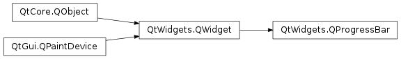

QProgressBar¶
Synopsis¶
Functions¶
- def
alignment() - def
format() - def
initStyleOption(option) - def
invertedAppearance() - def
isTextVisible() - def
maximum() - def
minimum() - def
orientation() - def
resetFormat() - def
setAlignment(alignment) - def
setFormat(format) - def
setInvertedAppearance(invert) - def
setTextDirection(textDirection) - def
setTextVisible(visible) - def
textDirection() - def
value()
Slots¶
- def
reset() - def
setMaximum(maximum) - def
setMinimum(minimum) - def
setOrientation(arg__1) - def
setRange(minimum, maximum) - def
setValue(value)
Signals¶
- def
valueChanged(value)
Detailed Description¶
The
PySide2.QtWidgets.QProgressBarwidget provides a horizontal or vertical progress bar.
A progress bar is used to give the user an indication of the progress of an operation and to reassure them that the application is still running.
The progress bar uses the concept of steps . You set it up by specifying the minimum and maximum possible step values, and it will display the percentage of steps that have been completed when you later give it the current step value. The percentage is calculated by dividing the progress (
PySide2.QtWidgets.QProgressBar.value()-PySide2.QtWidgets.QProgressBar.minimum()) divided byPySide2.QtWidgets.QProgressBar.maximum()-PySide2.QtWidgets.QProgressBar.minimum().You can specify the minimum and maximum number of steps with
PySide2.QtWidgets.QProgressBar.setMinimum()andPySide2.QtWidgets.QProgressBar.setMaximum(). The current number of steps is set withPySide2.QtWidgets.QProgressBar.setValue(). The progress bar can be rewound to the beginning withPySide2.QtWidgets.QProgressBar.reset().If minimum and maximum both are set to 0, the bar shows a busy indicator instead of a percentage of steps. This is useful, for example, when using
PySide2.QtNetwork.QNetworkAccessManagerto download items when they are unable to determine the size of the item being downloaded.
-
class
PySide2.QtWidgets.QProgressBar([parent=nullptr])¶ Parameters: parent – PySide2.QtWidgets.QWidgetConstructs a progress bar with the given
parent.By default, the minimum step value is set to 0, and the maximum to 100.
-
PySide2.QtWidgets.QProgressBar.Direction¶ Specifies the reading direction of the
PySide2.QtWidgets.QProgressBar.text()for vertical progress bars.Constant Description QProgressBar.TopToBottom The text is rotated 90 degrees clockwise. QProgressBar.BottomToTop The text is rotated 90 degrees counter-clockwise. Note that whether or not the text is drawn is dependent on the style. Currently CleanLooks and Plastique draw the text. Mac, Windows and WindowsVista style do not.
-
PySide2.QtWidgets.QProgressBar.alignment()¶ Return type: PySide2.QtCore.Qt.Alignment
-
PySide2.QtWidgets.QProgressBar.format()¶ Return type: unicode
-
PySide2.QtWidgets.QProgressBar.initStyleOption(option)¶ Parameters: option – PySide2.QtWidgets.QStyleOptionProgressBarInitialize
optionwith the values from thisPySide2.QtWidgets.QProgressBar. This method is useful for subclasses when they need aPySide2.QtWidgets.QStyleOptionProgressBar, but don’t want to fill in all the information themselves.See also
-
PySide2.QtWidgets.QProgressBar.invertedAppearance()¶ Return type: PySide2.QtCore.bool
-
PySide2.QtWidgets.QProgressBar.isTextVisible()¶ Return type: PySide2.QtCore.bool
-
PySide2.QtWidgets.QProgressBar.maximum()¶ Return type: PySide2.QtCore.int
-
PySide2.QtWidgets.QProgressBar.minimum()¶ Return type: PySide2.QtCore.int
-
PySide2.QtWidgets.QProgressBar.orientation()¶ Return type: PySide2.QtCore.Qt.Orientation
-
PySide2.QtWidgets.QProgressBar.reset()¶ Reset the progress bar. The progress bar “rewinds” and shows no progress.
-
PySide2.QtWidgets.QProgressBar.resetFormat()¶
-
PySide2.QtWidgets.QProgressBar.setAlignment(alignment)¶ Parameters: alignment – PySide2.QtCore.Qt.Alignment
-
PySide2.QtWidgets.QProgressBar.setFormat(format)¶ Parameters: format – unicode
-
PySide2.QtWidgets.QProgressBar.setInvertedAppearance(invert)¶ Parameters: invert – PySide2.QtCore.bool
-
PySide2.QtWidgets.QProgressBar.setMaximum(maximum)¶ Parameters: maximum – PySide2.QtCore.int
-
PySide2.QtWidgets.QProgressBar.setMinimum(minimum)¶ Parameters: minimum – PySide2.QtCore.int
-
PySide2.QtWidgets.QProgressBar.setOrientation(arg__1)¶ Parameters: arg__1 – PySide2.QtCore.Qt.Orientation
-
PySide2.QtWidgets.QProgressBar.setRange(minimum, maximum)¶ Parameters: - minimum –
PySide2.QtCore.int - maximum –
PySide2.QtCore.int
Sets the progress bar’s minimum and maximum values to
minimumandmaximumrespectively.If
maximumis smaller thanminimum,minimumbecomes the only legal value.If the current value falls outside the new range, the progress bar is reset with
PySide2.QtWidgets.QProgressBar.reset().The
PySide2.QtWidgets.QProgressBarcan be set to undetermined state by using (0, 0).- minimum –
-
PySide2.QtWidgets.QProgressBar.setTextDirection(textDirection)¶ Parameters: textDirection – PySide2.QtWidgets.QProgressBar.Direction
-
PySide2.QtWidgets.QProgressBar.setTextVisible(visible)¶ Parameters: visible – PySide2.QtCore.bool
-
PySide2.QtWidgets.QProgressBar.setValue(value)¶ Parameters: value – PySide2.QtCore.int
-
PySide2.QtWidgets.QProgressBar.text()¶ Return type: unicode
-
PySide2.QtWidgets.QProgressBar.textDirection()¶ Return type: PySide2.QtWidgets.QProgressBar.Direction
-
PySide2.QtWidgets.QProgressBar.value()¶ Return type: PySide2.QtCore.int
-
PySide2.QtWidgets.QProgressBar.valueChanged(value)¶ Parameters: value – PySide2.QtCore.int
© 2018 The Qt Company Ltd. Documentation contributions included herein are the copyrights of their respective owners. The documentation provided herein is licensed under the terms of the GNU Free Documentation License version 1.3 as published by the Free Software Foundation. Qt and respective logos are trademarks of The Qt Company Ltd. in Finland and/or other countries worldwide. All other trademarks are property of their respective owners.